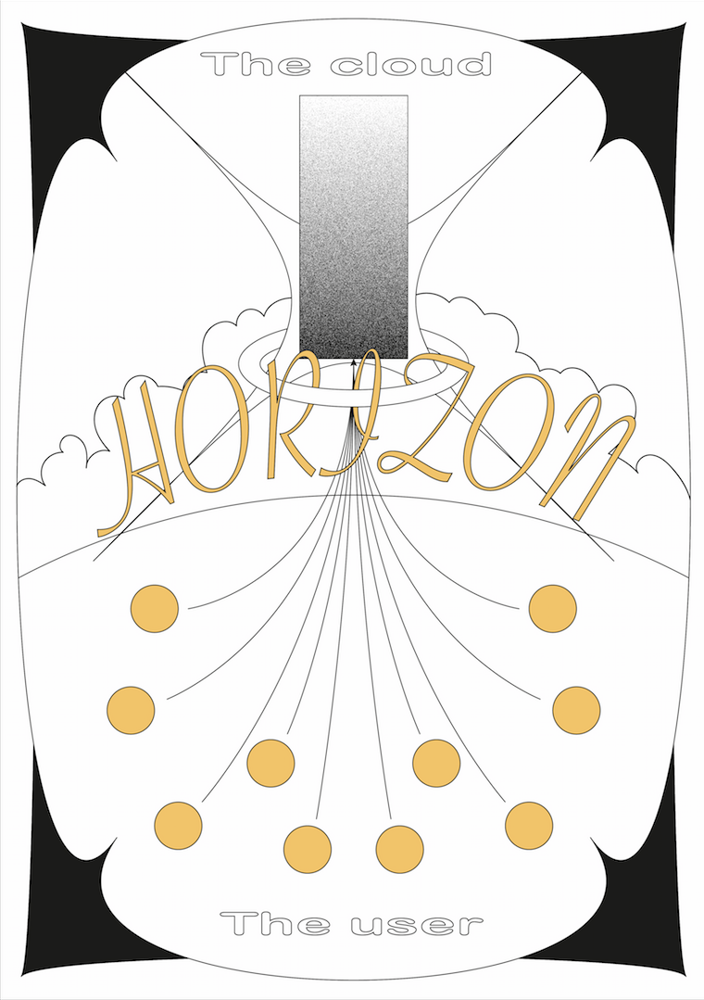
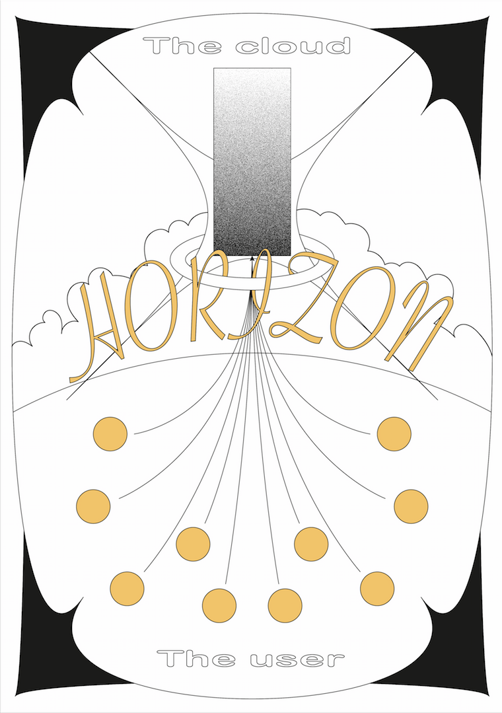

2019-2020IF YOU COULD TOUCH THE CLOUDS
Royal Academy of Arts, KABK - MA thesis
- essay
- research
- data infrastructures
Every single action we take online is far from being immaterial and ethereal as we may seem to believe.
In fact, it triggers a chain of events that mostly takes place inside windowless data centers and through
cables buried underground or submerged underwater.
Data centers, the physical appearance of the cloud, are the paradigm of infrastructural facilities of the 21st century.
There is a secrecy to them, a mysterious aura, that heavily contributes to shape the common idea of the digital realm
to be immaterial and ethereal. The cloud is not supposed to be touched, heard nor seen, as its abstract bits of
information float in a very distant place from us.
One of the most rapidly expanding industries in the last decades is pushed to fit in our collective imagination as
something that does not pollute, make sounds, fill space or even touch the ground.
The ways of existing today are not reflected by the unseen infrastructures they are supported by.
‘If You Could Touch the Clouds’ is an essay written for my MA thesis, and it is the foundation for the project Cloud Zoo.
↗ Here you can find an excerpt of the thesis.

 
